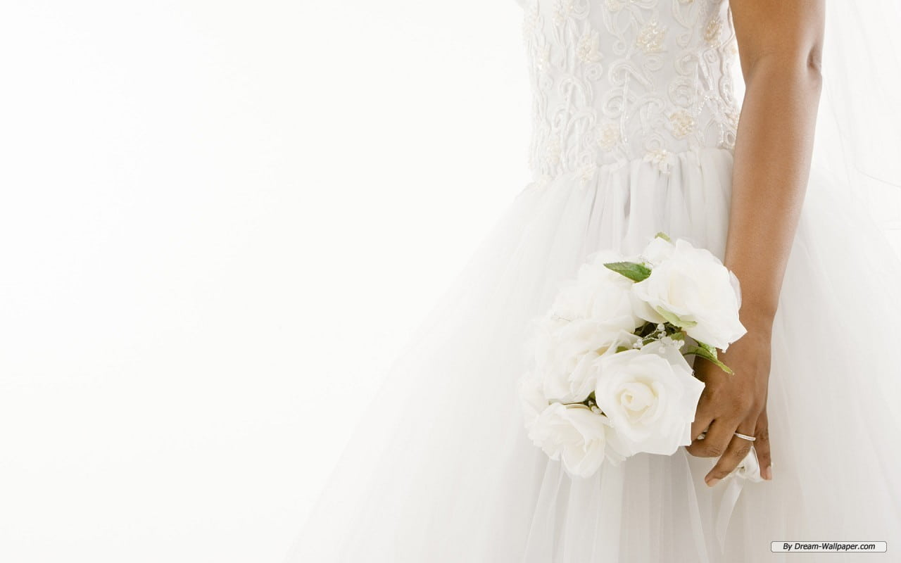

June 10, 2023, 10:00 (9:30 admission) You are cordially invited to attend

About Him
Anzhe is a brilliant STEM guy, a true academic genius. In his work, he embodies rationality and
logical thinking as an engineer. However, in relationships, he possesses a sensitivity that
allows him to catch all of my emotions and a tenderness that captivates the heart.
He is a devoted Christian, entering his sixth year of faith. His love for the Bible and thirst
for knowledge have laid a solid foundation for his beliefs. Alongside this, he is filled with a
passion for spreading the Gospel.
Anzhe fulfills the ten must-have and ten must-not-have qualities I listed for a partner, and
even exceeds them in many ways (such as being able to play the guitar, cook delicious meals, and
being 180 cm tall).
About Her
"My beloved spouse, you are exquisite. You are entirely beautiful, without any blemish."
Ennin is highly capable, efficient, and she often engages in prayer, waiting, and listening.
Ennin has a deep passion for reading, publishing books, and writing articles. She is a talented
girl, gentle, delicate, and mischievous.
To most people, Ennin appears flawless in every way, but only those who pray with her regularly
know that she surrenders her weaknesses and needs to God every day.
Ennin possesses the ability to express her emotions clearly and willingly helps her significant
other (me) understand them.
Our Story
Software Engineer & Art Social Worker
The meeting of John Emmet and Marry May was not a fairy tale story of Snow White and Prince
Charming, but rather a story of God's grace.
“We are God's workmanship.” Ephesians 2:10
Both of them once believed that they were the directors of their own life scripts, tirelessly
searching for happiness in various ways. After going in circles, they both returned to the
script written by their Heavenly Father, acknowledging before God that they are His
handiwork. They realized that they were created by Him, through Christ Jesus, which is the
most beautiful life story. It is the story that John Emmet and Marry May continue to be part
of.
Love is witnessing God's work in each other and rejoicing with gratitude.
Two people who dislike chatting online quickly arranged their first meeting. They decided to
meet in one of the beautiful parks in New Jersey.
John (mind filled with excitement): "This girl is so beautiful~ She's incredibly
gorgeous~"
Mary (curiously): "This guy seems really nervous. Hehe."
The Astonishing Girl
After several serious conversations and dates, John finally asked Mary to watch a movie
together.
(After the movie) John: "Shall we go for a walk in the park?"
Mary: "Which park is this?" John: "It's a park in New Jersey."
Mary (blinking): "Then let's explore the park!"
John (surprised, looking at her in a beautiful dress and high heels): "Uh... sure?"
So, the two of them embarked on a nighttime adventure in one of the parks in New Jersey.
John went home and shared this story with his roommate and best friend, who said, "She's the
one."
The Night of Confessing Feelings
Mary asked John, "If tomorrow was the end of the world, what would you say to me?" John
began talking about his beliefs.
John (scratching his head): "Later, I finally realized that Mary didn't want to hear about
my beliefs. She wanted to hear my confession."
Mary (dumbfounded): "So our thought processes differ so much~"
After John's confession, Mary shared with him her appreciation for his deep thoughts and
introverted personality.
John (appearing calm but internally excited): "God answered my prayer!"
The Day of Commencement
On a Sunday afternoon, after John and Mary had a meeting with the pastor, they went to a
lovely café. John prepared a handwritten commitment letter and, holding Mary's hand, recited
it to her.
John (with a sincere expression): "I, John Emmet, make this commitment in the grace of Jesus
Christ..."
Mary (teary-eyed)
Flirting Routine
Mary: "John is not only skilled in handling code as an engineer but also talented with
words. He's an engineer with a built-in love brain."
John: "On Saturday, when I was talking to you about our college days and advanced calculus,
I could spend a whole morning just thinking about two or three equations. But I realized you
are even more captivating than mathematics because with just one look at you, I find myself
lost in thoughts about you for a long, long time."
A Surprise Proposal
On a beautiful afternoon in one of the parks in New Jersey, John, along with their close
friends, prepared a surprise proposal for Mary. He sang and played the guitar, proposing to
Mary surrounded by the park's scenic beauty.
John (kneeling down): "Thank you for allowing me to love your past, your present, and for
allowing me to love your future. Will you marry me?"
Mary (choked up): "I will."
About the Future
Entering into marriage will bring many challenges, but we thank God for allowing us to
become each other's soul mate and journey partner, embarking on this unknown adventure
together in the parks of New Jersey.
Gallery
Address: Weddings,3831 Whites Creek Pike,
Nashville, TN 37207, USA